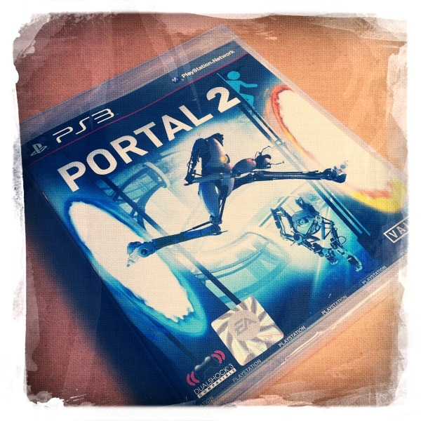

Thu, 21 Apr 2011 06:59:00 · Portal2 · PS3 · Games
look ive got in the mail this morning its

Look I’ve got in the mail this morning? ^_^
It’s my new Portal 2 disc for PS3! I don’t know why I’m so excited though given the fact that I’ve never even played the first one. Probably because my competitive gear kicked in when an offer to play co-op was issued. Well, what can I say… never be one who could resist a challenge, so game on, mate…! See you on the other side of the portal!